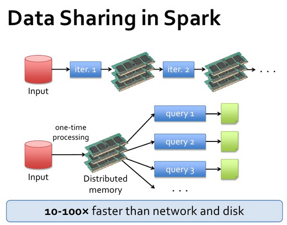
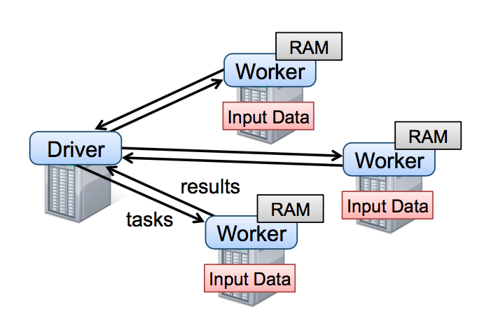

- Slides: http://nikolaypavlov.github.io/da-workshops-10/
- Skype Chat: https://join.skype.com/gjN0CfAd4bhg
- data.table cheat sheet
- data.table wiki
- Benchmarks data.table vs dplyr vs pandas
- Spark Documentation
- Clone my repo using git or download in ZIP format
- Install the following packages: spark, sparkR, data.table, hflights
Data Analysis with R
Working with Big Data
Mykola Pavlov
Data Scientist at Azzurro.io
Course Logistic
Topics
- Why Big Data is an issue?
- Intro to the data.table
- What is Spark?
- SparkR
Why Big Data is an issue?

Why Big Data is an issue?
library(hflights)
object.size(hflights)
## 24738416 bytes
- What if you try to compute dist(hflights)? DON'T DO THIS :)
\[227496 \times 227496 \times 8 \text{bytes} \sim 414 \text{Gb}\]
Why to choose data.table?
Pros
- Passing by reference vs passing by value
- Very fast
- Compatable with Data Frame
Const
- DT must fit in RAM
- Need to learn new syntax
data.table syntax
DT[i, j, by]
In SQL terminology:
- i - corresponds to WHERE
- j - corresponds to SELECT
- by - GROUP BY
"Take DT, subset the rows using i, then calculate j, grouped by by"
data.table i, j, by
library(data.table)
DT <- as.data.table(hflights)
DT[Month==10, mean(na.omit(AirTime)), by=UniqueCarrier]
## UniqueCarrier V1
## 1: AA 68.76471
## 2: AS 255.29032
## 3: B6 176.93548
## 4: CO 141.52861
## 5: DL 92.76824
## 6: WN 87.14947
## 7: XE 82.44422
## 8: OO 114.98865
## 9: UA 166.18354
## 10: US 137.46078
## 11: EV 113.12273
## 12: F9 126.55357
## 13: FL 90.85561
## 14: MQ 100.13054
The i part
Used to subset on rows
DT[3:5,]
DT[UniqueCarrier == "AA"]
DT[.N-1]
The j part
Used to select columns and apply functions
DT[, mean(na.omit(DepDelay))]
## [1] 9.444951
Do somthing with several columns using .()
DT[, .(departure=mean(na.omit(DepDelay)), arrival=mean(na.omit(ArrDelay)))]
## departure arrival
## 1: 9.444951 7.094334
The by part
DT[, mean(na.omit(DepDelay)), by=Origin]
## Origin V1
## 1: IAH 8.436951
## 2: HOU 12.837873
DT[, .(AVG_delay = mean(na.omit(DepDelay))), by=.(Origin, Weekend = DayOfWeek >= 6)]
## Origin Weekend AVG_delay
## 1: IAH TRUE 8.286543
## 2: IAH FALSE 8.492484
## 3: HOU TRUE 10.965384
## 4: HOU FALSE 13.433994
In-place update with :=
Add new column
DT[, Discrete_Distance := cut(Distance, breaks=20)]
Update existing column
DT[, ActualElapsedTime := ActualElapsedTime / 60]
Remove multiple columns
DT[, c("TaxiIn", "TaxiOut") := NULL]
Indexing and keys
setkey(DT, Year, Month)
DT[.(2011, c(3,4,5)), sum(Cancelled)]
## [1] 689
DT[.(2011, c(3,4,5)), sum(Cancelled), by=.EACHI]
## Year Month V1
## 1: 2011 3 159
## 2: 2011 4 251
## 3: 2011 5 279
Advanced function application with .SD
DT[, lapply(.SD[, .(AirTime, ArrDelay, DepDelay)], mean, na.rm=T), by=.(Year, Month)]
## Year Month AirTime ArrDelay DepDelay
## 1: 2011 1 104.1106 4.926065 7.930889
## 2: 2011 2 105.0597 6.349233 9.244213
## 3: 2011 3 108.2009 7.892718 9.746544
## 4: 2011 4 109.2508 11.088744 10.507546
## 5: 2011 5 110.3382 13.125916 12.198561
## 6: 2011 6 110.2511 10.836983 12.177978
## 7: 2011 7 109.2059 9.623474 12.451282
## 8: 2011 8 108.3067 4.533096 7.648850
## 9: 2011 9 107.8786 4.243050 6.332387
## 10: 2011 10 107.9135 3.723636 6.807661
## 11: 2011 11 107.5924 3.221324 6.732064
## 12: 2011 12 108.9317 5.013244 10.992983
Exercise
Find the worst carrier in terms of average arrival delay.
Which day of week is on average the busiest in terms of departure delays in the George Bush Intercontinental airport (IAH)?
What is Spark?
Apache Spark is a fast and general engine for large-scale data processing

What is Spark?
Spark runs on Hadoop, Mesos, standalone, or in the cloud. It can access diverse data sources including HDFS, Cassandra, HBase, and S3.
Hadoop vs Spark

[Spark and Shark: Lightning-Fast Analytics over Hadoop and Hive Data]
Hadoop vs Spark

[Spark and Shark: Lightning-Fast Analytics over Hadoop and Hive Data]
Programming Model:
Spark provides two main abstractions for parallel programming:
- resilient distributed datasets (RDD)
- parallel operations on these datasets
Parallel operations

[Matei Zaharia, Mosharaf Chowdhury, Tathagata Das, Ankur Dave, Justin Ma, Murphy McCauley, Michael J. Franklin, Scott Shenker, Ion Stoica. "Resilient Distributed Datasets: A Fault-Tolerant Abstraction for In-Memory Cluster Computing"]
Spark runtime

Available APIs
Examples in spark_examples.r
Course Logistic
- Slides: http://nikolaypavlov.github.io/da-workshops-10/
- Skype Chat: https://join.skype.com/gjN0CfAd4bhg
- data.table cheat sheet
- data.table wiki
- Benchmarks data.table vs dplyr vs pandas
- Spark Documentation
- Install the following packages: spark, sparkR, data.table, hflights